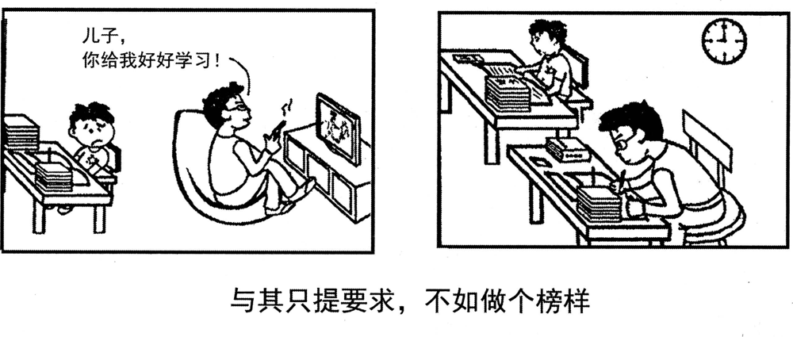

A小作文 · 以图书馆员身份，给新入学的国际学生写通知（10 分）
Suppose you are a librarian in your university. Write a notice of about 100 words, providing the newly-enrolled international students with relevant information about the library.
You should write neatly on the ANSWER SHEET.
Do not sign your own name at the end of the notice. Use “Li Ming” instead.
Do not write the address. (10 points)
💭 审题三件事
- ⭐⭐ 这是「信息类」通知，不是「号召类」通知。2010 的通知是招人——要写条件、报名方式、截止日期，读者读完要做一个决定（报不报）；2016 的通知是告知——读者读完要会用这座图书馆。⟹ 每一句都得是能被核对的事实：几点开、拿什么进、能借几本、借多久、英文书在几楼、找谁问。「我馆藏书丰富、环境优美」是广告，不是信息。
- ⭐⭐ 「relevant」两道筛子一起过：对新生相关的是第一次怎么办（校园卡要先激活、周五有导览）；对国际学生相关的是语言（英文书的位置、前台讲英语、⭐ 学中文的材料——这一条只有写给国际学生才成立）。两道筛子都过不了的（建馆历史、藏书几百万册、面积几万平方米）一律不写。
- 一百词装不下所有信息 ⟹ 分块、给小标题。通知是被扫读的，不是被细读的：读者站在公告栏前找「几点开门」，一眼要找到。三块就够：进门 · 借书 · 求助。首句一句欢迎 ＋ 交代对象，末句一句期待；别写「好好学习、珍惜时光」——那是 2012 的 suggestions，本年题干要的是 information。
⭐⭐ 十一年 Part A：2016 ＝ 2010 的体裁 × 2012 的读者
| 年份 | 体裁 | 读者是谁 | 第一句怎么起 | 落款 | 本年特有的坑 |
|---|---|---|---|---|---|
| 2007 | 建议信 | 校图书馆（机构） | I am writing to put forward several suggestions … | Li Ming | 建议只有口号没有可执行动作；写成投诉信 |
| 2008 | 道歉信 | 具名熟人 Bob | I am writing to apologize for … | Li Ming | 只道歉不给方案；方案没有「动作＋方式＋时间」 |
| 2009 | 致编辑信 | 报社编辑 | I am writing to express my concern about … | Li Ming | 建议里没有一条是编辑自己能办的 |
| 2010 | 通知 NOTICE （招募） | 一群人（无称呼） | Volunteers are needed for … | 机构名 | 写 Dear ＝ 体裁错；落款签 Li Ming |
| 2011 | 推荐信 · 荐物 | 未具名的一个朋友 | How have you been? I am writing to recommend … | Li Ming | 写成影评／剧透结局；通篇只有「我」没有「你」 |
| 2012 | 欢迎邮件 （以组织名义） | 一群国际学生 但仍是书信 | On behalf of the Students’ Union, I would like to extend a warm welcome to … | Li Ming ＋ Students’ Union | 按 2010 的手感写成通知；通篇 I 没有 we |
| 2013 | 邀请邮件 | 本校外教 | As chair of the English Club, I am writing to invite you to … | Li Ming | 只邀请、不交代工作量；没给答复期限 |
| 2014 | 建议信（撞 2007） | 本校校长 | As a third-year student, I am writing to suggest … | Li Ming | 建议写成对学生的劝告；用 should 下指令 |
| 2015 | 荐书邮件（撞 2011） | 读书会的一群会员 | As host of next Friday’s reading session, I would like to recommend … | Li Ming | 理由不对着读书会用途；剧透 |
| 2016 本题 | 通知 NOTICE （告知 · 撞 2010） | 刚入学的国际学生（撞 2012） | Welcome to the University Library! To help all newly-enrolled international students … | Li Ming （个人名义） | ⭐ 按 2012 的手感写成欢迎信（Dear…／Yours sincerely）；信息写成广告（藏书丰富、环境优美）；写成劝学 |
| 2022 | 邀请邮件 | 英国大学的教授 | On behalf of …, I am writing to invite you to … | Li Ming | 漏时间/地点/事由 |
- ⭐⭐ 2014 回到 2007 的建议信 · 2015 回到 2011 的推荐信 · 2016 同时回到两年：体裁取 2010，读者取 2012。⟹ 押体裁、押读者都没用，第四次验证；有用的仍是那四问：体裁词 · 读者（他们拿它做什么）· 以谁的名义 · Do not sign 后面跟的是什么。
- ⭐⭐ 2012 页当年写下的雷区，2016 反着用了一遍：2012 的坑是「读者是一群人，就按 2010 写成通知」；2016 的坑是「读者还是那群国际学生，就按 2012 写成欢迎信」。⟹ 写不写 Dear，看体裁名词，不看读者是谁——06 节分诊表的第一条判据，本年从反面又证了一次。
- ⭐ 「Do not sign」这句年年在，替代物第三次变：Li Ming（多数年）→ 机构名（2010）→ 通知也落 Li Ming（2016）。⟹ 落款照题干抄，别凭体裁猜：通知不一定落机构。
⭐⭐ 同是通知：2010 招人 vs 2016 告知（本页新增）
格式一样，目的一换，正文的骨架就换：招募类通知让读者做决定，告知类通知让读者会使用。
| 对照项 | 2010 · 研究生会招募志愿者 | 2016 · 图书馆给国际新生的须知 |
|---|---|---|
| 读者读完要干什么 | 决定报不报名 | ⭐ 知道怎么用这座图书馆 |
| Directions 给的要点 | basic qualifications ＋ other information which you think is relevant | 只有 relevant information——一条都没列 |
| 正文骨架 | 事由 → 条件 → 加分项 → 怎么报 → 回报 | 欢迎 ＋ 对象 → 进门 → 借书 → 求助 → 期待 |
| 最要紧的一类信息 | 截止日期与报名渠道 | 数字：几点、几本、多久、几楼 |
| 落款 | Postgraduates’ Association（机构） | Li Ming（个人）＋ 可加 University Library |
| 人称 | Those interested should …（第三人称） | we（图书馆）→ you（新生）：新生须知直接对读者说 |
| ⭐ 本年特有 | — | 读者是外国人 ⟹ 语言相关的信息（英文书、讲英语的馆员、学中文的材料）才算「relevant」 |
⚠️ Directions 限定词清算表（开考先圈出来）
| 限定词 | 它约束什么 | 违反的后果 |
|---|---|---|
| Suppose you are a librarian | 身份给了 ⟹ 用 we 代表图书馆说话；信息要像馆员给的那样准 | 以学生口吻「我们图书馆很好，推荐大家去」——身份丢了 |
| a notice … the end of the notice | ⭐ 非书信：标题 NOTICE 居中、无称呼、无敬语 | Dear international students … Yours sincerely ⟹ 体裁错，格式分先丢 |
| the newly-enrolled … | ⭐ 第一次来 ⟹ 「第一次怎么办」：卡怎么激活、有没有导览 | 只写规章（禁止喧哗、按时还书）——对老生也一样，没对准「新」 |
| … international students | ⭐⭐ 外国人 ⟹ 语言：英文书在哪、谁讲英语、学中文的材料 | 通篇没有一句是只对国际学生才成立的——换成写给中国新生也一字不用改 |
| providing … with relevant information | ⭐⭐ information ＝ 事实，relevant ＝ 用得上；要点自拟 | 写成广告（藏书丰富、环境优美）或劝学（好好利用、珍惜时光） |
| （本年没有任何 1) 2) 3)） | 十年里要点最少的一年 ⟹ 挑三块，每块给数字 | 什么都想写，每样一句空话；或只写一样（开放时间）凑不够分量 |
| of about 100 words | 95–115 最稳 | 把规章抄成二十条写到 160 |
| Do not sign … Use “Li Ming” instead Do not write the address | 落款 Li Ming（通知也落个人名）；不写地址 | 按 2010 落 Library 而漏了 Li Ming；签真名有判零风险 |
🧩 「relevant」两道筛子：什么该写、什么不该写（本页新增）
要点全靠自拟时，拿每条候选信息过两道筛子：对「第一次来的人」有没有用？对「外国人」有没有特别的用？两道都过的最值钱，两道都不过的删掉。
| 候选信息 | 新生筛 | 国际筛 | 写不写 · 本文写成了哪一句 |
|---|---|---|---|
| 开放时间 | ✅ | — | We are open from 8 a.m. to 10 p.m. every day. |
| ⭐ 进门要什么卡、怎么激活 | ✅✅ | — | Your student card is your library card; just have it activated at the front desk on your first visit. |
| 借几本、借多久、怎么续 | ✅ | — | You may borrow up to ten books for a month and renew them online. |
| ⭐⭐ 英文书与学中文的材料在哪 | ✅ | ✅✅ | Books in English, as well as materials for learning Chinese, are on the third floor. |
| ⭐⭐ 前台讲不讲英语 | ✅ | ✅✅ | Our front-desk staff speak English … |
| ⭐ 新生导览 | ✅✅ | ✅ | … and a free guided tour starts at the main entrance at 3 p.m. every Friday this month. |
| 建馆年份、藏书几百万册、面积 | ✗ | ✗ | ❌ 不写：读者读完仍然不知道怎么进门 |
| 禁止饮食、保持安静 | △ | — | 不写：对谁都一样，而且一百词里一条规矩就挤掉一条信息 |
| 好好利用图书馆、多读书 | ✗ | ✗ | ❌ 不写：这是 advice 不是 information |
- ⭐ 考场上没人知道你们学校几点开门——数字可以虚构，阅卷看的是「你给了一个可核对的信息」，不是它对不对。但要合常理：8 点到 22 点、10 本借一个月、三楼——别写 24 小时借 100 本。
- ⭐ 数字的写法：8 a.m. to 10 p.m.（a.m. 小写带点）· up to ten books（十以内拼写）· at 3 p.m. every Friday。❌ 8:00am-22:00pm（24 小时制不再加 pm）。
- ⭐⭐ 别写网址、邮箱：题干 Do not write the address 本意是通讯地址，但写进一个编造的邮箱同样是「地址」，没必要冒这个险——「找前台」就够了。
✍️ 范文（ 词 · 🟡 亮点点击看讲解）
NOTICE
欢迎 ＋ 对象Welcome to the University Library! To help all newly-enrolled international students make the most of it, here is what you need to know.
进门Getting in: We are open from 8 a.m. to 10 p.m. every day. Your student card is your library card; just have it activated at the front desk on your first visit.
借书Borrowing: You may borrow up to ten books for a month and renew them online. Books in English, as well as materials for learning Chinese, are on the third floor.
求助 ＋ 期待Getting help: Our front-desk staff speak English, and a free guided tour starts at the main entrance at 3 p.m. every Friday this month. We look forward to seeing you!
Li Ming
University Library
欢迎来到校图书馆！为帮助全体新入学的国际学生充分利用图书馆，特告知如下。
入馆：本馆每天早 8 点至晚 10 点开放。你的学生卡就是借书证，首次来馆时到前台激活即可。
借阅：每人最多可借 10 本书，借期一个月，可在网上续借。英文书籍以及中文学习资料在三楼。
求助：前台工作人员会讲英语；本月每周五下午 3 点在正门有免费导览。期待你的到来！
李明
校图书馆
- ⭐⭐ 体裁写成欢迎信：Dear international students, … Yours sincerely, Li Ming。题干两次写 notice ⟹ 标题 NOTICE、无称呼、无敬语。读者和 2012 一样，体裁不一样。
- ⭐⭐ 要点信息写成广告：Our library is large and beautiful, with millions of books and a quiet environment. 读完仍不知道怎么进门——relevant 的判据是「新来的外国学生用得上」。
- ⭐⭐ 要点没有一句只对国际学生成立：通篇开放时间 ＋ 借阅规则，换成写给中国新生一字不用改。至少一句落在语言上（英文书 · 讲英语的馆员 · 学中文的材料）。
- ⭐ 要点写成劝学：I hope you will make full use of the library and study hard. 题干要 information，不要 suggestions（那是 2012）。
- ⭐ 要点信息没有数字：The library opens early and closes late / You can borrow many books。通知的信息要能被核对：几点、几本、多久、几楼。
- 落款只落机构名（按 2010 的手感写 University Library）——题干要求 Li Ming；在 Li Ming 下面加一行部门可以，不能用部门代替 Li Ming。
- 语言newly-enrolled 照抄题干的连字符写法最稳 ·❌ open time ⟹ ✅ opening hours · ❌ borrow books from the library for one month long ⟹ ✅ borrow … for a month。
- 字数about 100 词：95–115 最稳。本文 词（不含标题与落款）。
- ⭐ 第一句只做欢迎：Welcome to the University Library!——通知也可以有温度，但一句就够；2012 的欢迎信要一整段欢迎，本年的欢迎只是引子。
- ⭐⭐ 第二句把题干的读者原样放进来：To help all newly-enrolled international students make the most of it——通知没有称呼，读者靠这一句点名；make the most of（充分利用）交代通知的目的。
- ⭐⭐ 三个小标题 ＋ 冒号：Getting in: / Borrowing: / Getting help:——通知是扫读的，小标题让读者一眼找到要的那块；三个都是动名词，形式统一。考场手写可以加下划线。
- ⭐⭐ 「新」的那一句：Your student card is your library card; just have it activated at the front desk on your first visit.——只有第一次来的人才需要知道；have it activated（使役 ＋ 过去分词：让人把它激活）比 activate it 更准（激活是馆员做的）。
- ⭐⭐⭐ 「国际」的那一句：Books in English, as well as materials for learning Chinese, are on the third floor.——学中文的材料是全文唯一一条只对外国学生成立的信息，一出现，阅卷人就知道你读懂了 international；as well as 插在主语中间，谓语仍跟 Books 走（are）。
- ⭐ 导览给齐三样：a free guided tour starts at the main entrance at 3 p.m. every Friday this month——哪里 ＋ 几点 ＋ 哪几天，读者照着就能去；this month 对准「新生开学这个月」。
- 末句一句期待：We look forward to seeing you!——we 仍是图书馆；落款 Li Ming，下一行 University Library 交代身份（可省）。
B大作文 · 图画作文（20 分）
Write an essay of 160–200 words based on the following pictures. In your essay, you should
1) describe the pictures briefly,
2) interpret the meaning, and
3) give your comments.
You should write neatly on the ANSWER SHEET. (20 points)

- 两格，没有分格标签（2014 两格各有「三十年前……／现在……」；本年两格都没字，只有左格一个对话框）。
- 左格：父亲戴眼镜，整个人陷在一张大扶手椅里，腿伸着，手里拿着遥控器，脸朝着电视。对话框从他嘴里出来：「儿子，你给我好好学习！」——⚠️ 他喊这句话时脸没转过来。
- 左格的儿子：坐在书桌前，桌上两摞书整整齐齐、没翻开；他身子侧着、眉头皱着、眼珠斜向右边——朝着父亲和电视的方向。
- 右格：电视不见了。父亲坐在一张和儿子一模一样的书桌前，桌上也有一摞书，他低着头、握着笔在写。儿子在他身后另一张书桌前，也低着头在读。
- ⚠️⚠️ 右格没有一个对话框——谁也没说话；父亲背对着儿子，同样没看他。墙上多了一只钟（只说明这是一段时间，别编成几点、几小时）。
- 图下方图注：「与其只提要求，不如做个榜样」——一个完整的复句，没有引号。Directions 第一次用复数 pictures（2014 也是两格，当年仍写 drawing），第 2 条写 interpret the meaning（2013–2015 是 its intended meaning）。
💭 审题：图注已经把论点说了——你要写的是「只」字和「为什么」
- 先看到对比：左边父亲看电视却叫儿子学习，右边父亲自己学、儿子跟着学——主题送到手上：言传不如身教、父母是孩子的第一任老师。这一步图注已经替你说完了，照着复述只够三档。
- ⭐⭐⭐ 再拿图注的每个字核对画面——卡在「只」字上。图注没说「不要提要求」，说的是「与其只提要求」。回右格查：要求还在吗？在——儿子桌上还是那摞书，他还是在学；只是没人再说一个字。⟹ 要求没有被取消，是换了地方：从父亲嘴上挪到了父亲桌上。这就是题眼，也是第二段的最后一句。
- ⭐⭐ 再看最反常处：儿子两格都在学父亲。左格儿子没在看书，眼睛斜向电视——他其实在学，学的是父亲的眼睛往哪看；右格他伏在桌上，学的是父亲的姿势。而父亲两格都没看儿子。⟹ 决定儿子做什么的，不是有没有人盯着，是他看见了什么。⟹ 第二段三步：① 两格儿子都在模仿 → ② 左格的话和身体说了两件相反的事，孩子信身体 → ③ 右格要求还在，只是挪了地方。
- 「儿子，你给我好好学习！」✅ “Study hard, son!” ／ “Son, you study hard!”（「你给我」是命令语气，祈使句本身就带着，不用译「给我」）。❌ “Son, give me study well!”（字对字）· ❌ “Study good!”（good 不作副词）。转述也行：orders his son to study hard。
- 「与其只提要求，不如做个榜样」✅ “Rather than only making demands, set an example.” ／ “Set an Example Instead of Just Making Demands”。⚠️ only ／ just 必须译出来——它就是题眼；丢了它，图注就成了「别提要求」。❌ “Make an example”（make an example of sb ＝ 惩一儆百、杀鸡儆猴！）· ❌ “put forward requirements”（公文腔，家里不这么说）。
📐 描图段三看（本图版 · 两格图要逐项对照着看）
| 看什么 | 本图看出来的 | 写进文章的哪一句 |
|---|---|---|
| ① 看图上的字 | 左格对话框「儿子，你给我好好学习！」＋ 图注（取舍复句，带「只」字） | … orders his son without turning from the television: “Study hard!” … The caption reads, “Rather than only making demands, set an example.” |
| ② 看最反常处 | ⭐⭐ 父亲喊话时头都没回；右格一个字都没有，儿子却在学 | In the second picture not a word is spoken, yet the demand is still there … |
| ③ 看动作方向 | ⭐⭐ 儿子的视线跟着父亲走：左格斜向电视，右格和父亲一样朝下伏在书上；父亲两格都背着／侧着儿子 | … first his eyes follow the father’s to the screen, then his head bends over a book like the father’s. |
⭐⭐ 两格图第二次：什么变了，什么没变（接 2014）
2014 页定下「两格图先列变 / 不变，不变的那一项才是立足点」。2014 不变的是笑；2016 不变的有两样，而且正好一样管一半论点。
| 看哪一项 | 左格 | 右格 | 说明什么 |
|---|---|---|---|
| 父亲的姿势 | 陷在扶手椅里、腿伸着 | 坐直、伏在书桌上 | 变——从「休息」到「用功」 |
| 父亲手里 | 遥控器 | 笔 | 变 |
| 父亲的家具 | 扶手椅 ＋ 电视柜 | ⭐ 一张和儿子一样的书桌、一样的一摞书 | 变——父亲把儿子的任务搬到了自己桌上 |
| ⭐⭐ 字 | 一个对话框（命令） | 一个字都没有 | 变——从言到行：图注前半句配左格，后半句配右格 |
| 儿子的状态 | 书没翻、皱眉、眼睛斜向电视 | 低头在读 | 变——结果 |
| ⭐⭐⭐ 儿子在学谁 | 学父亲的眼睛（看向电视） | 学父亲的姿势（伏在书上） | 不变——孩子一直在模仿，区别只在他看见了什么 ⟹ 第二段第一句 |
| ⭐⭐ 父亲看没看儿子 | 没看（脸朝电视） | 没看（背对着） | 不变——榜样不靠盯；右格不是「陪读」，是父亲在做自己的事 |
| 儿子的书 | 一摞 | 一摞 | 不变——要求还在，没有降低 ⟹ 解「只」字 |
- ⭐⭐ 2014「相携」：不变的是笑 ⟹ 三十年过去，陪伴没变——不变项撑起主题。
- ⭐⭐ 2016「做个榜样」：不变的是儿子在模仿和父亲没看儿子 ⟹ 孩子总在学，学什么取决于看见什么；不变项撑起机制（第二段要回答的「为什么」）。
- ⭐ 只写变，第二段就只剩复述图注（左边说、右边做，所以做比说好）——那是图注已经说完的话。不变项才是你自己看出来的东西。
🧩 图上字的语法结构，决定文章的论证结构（九型扩到十型：新增「取舍复句：与其 A，不如 B」）
| 年份 | 图上的字是什么结构 | 文章就得怎么搭 |
|---|---|---|
| 2007 | 无字，只有两个想象气泡 | 靠对比两个气泡立意 |
| 2008 | 因果句：你一条腿，我一条腿；你我一起，走南闯北 | 顺着因果推。单线论证 |
| 2009 | 对举短语：网络的“近”与“远” | 两边都写，还要回答为什么同一个东西既近又远 |
| 2010 | 比喻式判断句：文化“火锅”：既美味又营养 | 先解喻，再分别落实两个并列谓语 |
| 2011 | 引号双关式短语：旅程之“余” | 破字 → 对照句 → 指认施动者 |
| 2012 | 两句对白：全完了！／幸好还剩点儿。 | 转述 → 拿画面核对真假 → 看手 |
| 2013 | 一词图注 ＋ 并列标签：选择 ／ 求职·考研·出国·创业 | 全译 → 不排座次 → 追问谁来选 |
| 2014 | 两格时间标签 ＋ 一词图注：三十年前…… ／ 现在…… ／ 相携 | 两格同构描 → 列变与不变 → 在两格之间解图注 |
| 2015 | 偏正短语：手机时代的聚会 | 写中心语，拆开看哪一半还在，矛头别指定语 |
| 2016 本题 | 取舍复句：与其只提要求，不如做个榜样（两个分句 ＋ 一个限定副词） | ⭐ 三步走：① 两个分句各配一格（前句配左格、后句配右格，图注替两格当了标签）；② ⭐⭐ 第二段不复述「B 比 A 好」，写「为什么」——图注给了结论，没给机制；③ ⭐⭐ 第三段处理限定副词「只」：取舍句舍的是「只有 A」，不是 A 本身 |
| 2022 | 对话：两名学生就要不要听讲座的两句话 | 转述两句对话并选边站 |
- ⭐⭐ 先找限定副词：只 ／ 光 ／ 一味 ／ 单靠。「与其只 A，不如 B」≠「不要 A，要 B」——前者承认 A 有用、只是不够。漏了这个字，第三段就会写成「父母不该对孩子有要求」（跑题②）。同类图注：「与其一味批评，不如……」「光靠禁止不如……」——一律先圈副词。
- ⭐⭐ 图注是规范句（说「应该怎样」），十一年里第一次：2008 的对句描述两人在做什么，2010 的判断句评价一样东西，2016 直接告诉你该怎么做。⟹ 立场已经给了，第二段不许再「表明立场」；Directions 第 2 条本年恰好也从 its intended meaning 改成 the meaning——意思不用猜，要讲的是它为什么成立（这是对措辞变化的一种读法，不必当成命题人的明示）。
| 年份 | 现成联想 | 回画面查一遍 | 结论 |
|---|---|---|---|
| 2009 | 蛛网 ⟹ 陷阱 | 图里没有蜘蛛 | ❌ 联想错 |
| 2010 | 火锅 ⟹ 熔炉 | 每块料都还保留形状和名字 | ❌ 联想错 |
| 2011 | 河脏 ⟹ 工厂排污 | 图上没有工厂 | ❌ 联想错 |
| 2012 | 半杯水 ⟹ 乐观 vs 悲观 | 瓶里确实还剩、两人确实相反 | ✅ 成立，但少了那只手 |
| 2013 | 岔路口 ⟹ 选对那条路 | 四条路没被标出对错 | ⚠️ 半成立：隐含前提找不到 |
| 2014 | 子女扶老人 ⟹ 反哺／报恩 | 母亲在自己走、在笑 | ⚠️ 半成立：程度过了量 |
| 2015 | 低头族 ⟹ 手机有害 | 没有一个人痛苦，两个在笑 | ⚠️ 半成立：打错了靶 |
| 2016 本题 | 父子 ＋ 书桌 ⟹ 「身教胜于言传 ⟹ 父母别说教，做就行」 | 前半成立（图注原话）；但右格要求还在（儿子的书没少一本），图注写的是「只提要求」 | ✅ 成立，但背熟的版本删掉了「只」——把「言传不够」说成了「言传没用」 |
- ⭐⭐ 规矩再补一句：现成联想就写在图注上时，拿图注逐字核对你背的那句。Actions speak louder than words 说的是「行比言响」，没说「言可以不要」；写到 Parents should stop making demands 就越过了图注。
- ⭐ 八年这把尺子量出四种结果：错（2009–2011）· 成立但不够（2012 少一只手 · 2016 少一个字）· 半成立（2013 前提 · 2014 程度 · 2015 靶子）。动作始终只有一个：回画面、回图注，逐项查。
✍️ 范文（ 词 · 🟡 亮点点击看讲解）
①描图In the first picture, a father lounges in an armchair, remote in hand, and orders his son without turning from the television: “Study hard!” The boy sits by a pile of books, but he is not reading. In the second, the father bends over a desk of his own, while the boy reads behind him. The caption reads, “Rather than only making demands, set an example.”
②寓意Look closer, and the boy copies his father in both pictures: first his eyes follow the father’s to the screen, then his head bends over a book like the father’s. The order says “study”, the armchair says “relax”, and the boy believes the armchair. In the second picture not a word is spoken, yet the demand is still there; it has simply moved from the father’s mouth to his desk.
③评论The word “only” matters: parents are right to expect effort, but they cannot expect it alone. A love of learning can’t be ordered, only modeled; an evening hour with a book of their own says more than a thousand reminders. The surest way to keep a child at his desk is to be seen at your own.
仔细看，两幅图里男孩都在学他的父亲：先是眼睛跟着父亲的眼睛望向屏幕，后来是头像父亲一样低下去、伏在书上。命令说「学习」，扶手椅说「放松」，而孩子信了扶手椅。第二幅图里一个字也没人说，要求却依然在那里；它只不过从父亲的嘴上挪到了父亲的书桌上。
那个「只」字很要紧：父母期待孩子用功并没有错，只是不能只有期待。对学习的热爱是命令不来的，只能靠示范；每晚捧一小时自己的书，胜过一千句叮嘱。要让孩子坐得住自己的书桌，最可靠的办法，是让他看见你坐在你的书桌前。
🔁 一图三写：同一幅图，第三段的三个版本
前两段一个字不动，只换第三段——按 Directions 第 3 条的动词选版本。点一下卡片可以高亮对照。
- ⭐⭐ 立意第二段复述图注：The pictures tell us that setting an example is better than making demands。图注已经说完了——第二段要写为什么：孩子一直在模仿，话和身体说反了，他信身体。
- ⭐⭐ 立意把「只」丢了：Parents should not make any demands on their children / Children should be free to decide。图注是「与其只提要求」，右格儿子照样有一摞书要读——要求没被取消。
- ⭐⭐ 立意写成陪读、监督：Parents should sit beside their children and check their homework。右格父亲背对儿子、在写自己的东西，一眼都没看他——榜样不是盯梢。
- ⭐ 描图漏译对话框或图注，或把图注的 only 丢掉（译成 Set an example instead of making demands）。两处字都要进第一段，only 一个都不能少。
- ⭐ 描图只写父亲、不写儿子在干什么：左格儿子书没翻、眼睛斜向电视——这是第二段「他在模仿」的证据，漏了就没得论。
- 语言❌ make an example（make an example of sb ＝ 惩一儆百）⟹ ✅ set an example / be a role model · ❌ study good ⟹ ✅ study hard · ❌ watch TV series on the sofa lazily ⟹ ✅ lounge in an armchair。
- 语气把父亲写成反面典型：The father is lazy and irresponsible。他在叫儿子学习——他是关心的；问题是他不知道儿子在看他。骂父亲，第三段就只剩「家长要以身作则」的口号。
- 字数160–200：185–198 最稳。本文 词。
- ⭐ 两格用同一个框架起句：In the first picture, … In the second, …——第二次省掉 picture，避免重复又保持同构（2014 页的两格同构法）。
- ⭐⭐ 「头也不回」写进一个状语：orders his son without turning from the television——这是左格最反常的细节：命令发出去了，眼睛还在电视上。
- ⭐ 描儿子只说「没在读」，不说他在看什么：but he is not reading——把「他在看电视」留到第二段揭开，第二段的 Look closer 才有东西可看。
- ⭐ a desk of his own：of his own 强调「他自己的」——右格父亲不是坐到儿子桌边，是有了自己的书桌，这才是榜样而不是监工。
- ⭐⭐⭐ 第二段第一句写不变项：Look closer, and the boy copies his father in both pictures——祈使句 ＋ and（＝ If you look closer, …），把读者的眼睛拉回画面；in both pictures 是全文自己看出来的那一点。
- ⭐⭐ eyes ↔ head 两个身体部位：first his eyes follow the father’s to the screen, then his head bends over a book like the father’s——两次 the father’s（名词所有格后省 eyes／head），一句话写完两格的模仿。
- ⭐⭐⭐ 让家具开口：The order says “study”, the armchair says “relax”, and the boy believes the armchair.——三个 says／believes 的主语是物；「言传与身教打架、孩子信身教」一句不用抽象词就说完了。
- ⭐⭐ 第二段收在「挪了地方」：it has simply moved from the father’s mouth to his desk——mouth ↔ desk：要求从说出来的变成摆出来的；这句同时替第三段的「只」铺好路。
- ⭐⭐ 第三段第一句解「只」：The word “only” matters: … they cannot expect it alone——冒号前点字、冒号后解释；alone 就是 only 的英文落点。
- ⭐ 借翻译 ①❸ 句架：Mental health can’t be learned, only reawakened. ⟹ A love of learning can’t be ordered, only modeled——ordered ↔ modeled 正好对上左格与右格。
- ⭐⭐ 末句 at his desk ↔ at your own：The surest way to keep a child at his desk is to be seen at your own.——回到右格那两张书桌；be seen 被动——重点不是你在读，是他看得见你在读。
03🩺 跑题诊断表（这幅图最容易滑向的五个方向）
家庭教育是人人都背过一套的题——图注又把论点直接给了，背熟的那一套更容易整段倒出来。下面五条按「有多容易滑过去」排序，①②③是本图特有的。
| 跑向 | 长什么样 | 为什么错 | 回到正轨的那一句 |
|---|---|---|---|
| ① 第二段复述图注 本图特有 | The pictures show that parents should set an example rather than just make demands, which is very important. | ⚠️⚠️ 图注第一次把论点直接写出来——照抄等于第二段交白卷；Directions 要的是 interpret，要讲机制 | Look closer, and the boy copies his father in both pictures. |
| ② 把「要求」整个否掉 本图特有 | Parents should stop pushing their children and give them freedom to choose … | ⚠️ 漏了「只」：图注舍的是「只有要求」；右格儿子的书一本没少，要求还在 | Parents are right to expect effort, but they cannot expect it alone. |
| ③ 写成陪读 ／ 监督 本图特有 | Parents should accompany their children when they do homework and check it carefully … | 右格父亲背对儿子、在做自己的事，两格都没看儿子——盯着写作业仍是「提要求」，只是换成了眼睛 | The surest way to keep a child at his desk is to be seen at your own. |
| ④ 写成批判电视 ／ 手机 | Television and smartphones are ruining family life, so parents should throw them away … | 靶子错（2015 的老坑）：电视只是道具，要害是话和行说反了——换成打麻将、刷短视频，图的意思一样 | The order says “study”, the armchair says “relax”, and the boy believes the armchair. |
| ⑤ 写成应试压力 ／ 减负 | Chinese students are under great pressure, with piles of books and endless homework … | 图上的书是两格都一样的道具，没有一格在画负担；主角一换成「学生太累」，就离开了父子俩 | it has simply moved from the father’s mouth to his desk. |
04🌏 图上的字与动作怎么译 ＋ 家庭教育 ／ 榜样话题词块
本图最容易写成中式英语的是「做榜样」「提要求」「以身作则」三个说法——一个 make 写错，意思就成了「杀鸡儆猴」。
| 中文 | ✅ 这样写 | ⚠️ 别这样写 |
|---|---|---|
| ⭐⭐ 与其只提要求，不如做个榜样 | Rather than only making demands, set an example. ／ Set an Example Instead of Just Making Demands | Set an example instead of making demands（丢了 only） |
| ⭐⭐ 做榜样 | set an example (for sb) ／ be a role model ／ lead by example | make an example（make an example of sb ＝ 惩一儆百） |
| ⭐ 提要求 | make demands (on sb) ／ tell sb what to do ／ lay down rules | put forward requirements（公文腔）· raise requests |
| ⭐ 以身作则 ／ 言行一致 | practice what you preach ／ walk the talk | do as you say（意思对但平）· use body to teach |
| ⭐ 言传身教 | teach by example as well as by words | teach by words and body |
| 好好学习！ | Study hard! | Study good! · Learn well! |
| 窝在扶手椅里 | lounge ／ sprawl in an armchair | lie in the sofa lazily |
| 遥控器 | a remote ／ remote control | a controller（游戏手柄） |
| 唠叨 ／ 叮嘱 | nag sb about sth ／ reminders | talk and talk to sb |
| 父母是孩子的第一任老师 | Parents are a child’s first teachers. | Parents are the first teacher of kids.（数不一致） |
🧺 家庭教育 ／ 榜样话题词块（可迁移到「言行一致」「领导示范」「教师身教」类题目）
05素材联动 · 2016 本年七篇能喂这篇作文
⚠️ 翻译与大作文连续第五年不撞题（翻译讲「心理健康与生俱来」，翻译页 06 已写明），但它给了全文最好用的一个句架。T1 讲时尚业的「模特」——model 正是「榜样」；T2、T4、新题型各有一句能换进来。
06📮 Part A 分诊表：十四类书信 ＋ 四类非书信（本年把「通知」拆成两行：招募类 / 告知类）
读完 Directions 先在草稿纸上写四样：体裁词 / 读者（他手里有什么权限、他们拿它去做什么）/ 以谁的名义 / 要点数（含限定词）。
⚠️ 本年提醒我们：通知分两种——招人的让读者做决定，告知的让读者会使用；而且通知也可能落个人名。
① 书信十四类（有称呼、有落款人名）
| 体裁 | 第一句（目的句） | 收尾句 | 这一类特有的雷区 |
|---|---|---|---|
| 建议信 · 给机构 2007 | I am writing to put forward several suggestions concerning … | I would be grateful if these could be taken into consideration. | 写成投诉信；建议只有口号没有可执行动作 |
| 建议信 · 给握着权限的人 2014 | As a …, I am writing to suggest how … might improve … | I would be grateful for your consideration. | 建议写给了第三方；用 should 下指令；Dear Headmaster |
| 道歉信 2008 | I am writing to apologize for + doing … | Please accept my sincere apologies. | 只道歉不给方案；过度辩解／过度自责 |
| 致编辑信 2009 | I am writing to express my concern about … | I do hope these ideas will reach your readers. | 写成檄文；建议里没有一条是编辑自己能办的 |
| 推荐信 · 荐物给一个人 2011 | How have you been? I am writing to recommend … to you | Shall we watch it together this weekend? | 写成影评／剧透结局；通篇只有「我」没有「你」 |
| 推荐信 · 荐物给一群人 2015 | As host of …, I would like to recommend … by … | Please come with your answer to one question: …? | 理由不对着那件共同的事；剧透；通篇 I 没有 we |
| 欢迎信（以组织名义） 2012 | On behalf of …, I would like to extend a warm welcome to … | Whatever comes up, just reply to this email. | 读者是一群人就写成通知；Welcome you to … |
| 推荐信 · 荐人 | It is my pleasure to recommend Mr./Ms. … for … | I recommend him/her without reservation. | 通篇形容词、没有一件具体事例 |
| 邀请信 · 请人参加 2022 | On behalf of …, I am writing to invite you to … | We are looking forward to your favorable reply. | 漏时间/地点/事由；不说明「为什么请你」 |
| 邀请信 · 请人担任角色 2013 | As chair of …, I am writing to invite you to serve as … | Could you let us know by … whether you are available? | 不交代工作量；没有答复期限 |
| 感谢信 | I am writing to express my heartfelt thanks for … | Please accept my sincere gratitude once again. | 不写清对方做了哪一件具体的事 |
| 投诉信 | I am writing to complain about … | I would appreciate it if you could look into this matter. | 只发泄情绪、不提出明确诉求 |
| 咨询信 | I am writing to ask for information concerning … | I would appreciate an early reply. | 问题堆成一团——要 1) 2) 3) 编号问 |
| 申请信 | I am writing to apply for the position of … | I would be glad to attend an interview at your convenience. | 只夸自己不对岗；不留联系方式 |
② 非书信四类（无称呼、落款写机构、题干指定的人名或不落款）
| 体裁 | 开头 | 结尾 / 落款 | 这一类特有的雷区 |
|---|---|---|---|
| 通知 · 招募类 notice 2010 | 标题 NOTICE 居中；正文直入事由（Volunteers are needed for …） | 末句给行动指令或好处；落款照题干（2010 ＝ 机构名） | 按书信写（Dear… / Yours sincerely）；漏截止日期与报名渠道 |
| 通知 · 告知类 （须知 / 指南） 2016 本题 | 标题 NOTICE 居中；一句欢迎 ＋ 点名读者（To help all … , here is what you need to know.） | 分块给信息（小标题 ＋ 数字）；末句一句期待；落款照题干（2016 ＝ Li Ming） | ⭐ 信息写成广告或劝学；没有一句对准读者的特殊身份；按欢迎信写 Dear |
| 备忘录 memo | 顶部四行 To / From / Date / Subject，然后正文 | 不写客套，末句给下一步动作 | 漏掉顶部四行；写成对外的信 |
| 报告 / 摘要 report | 标题居中（Report on …）；首段交代目的与范围 | 末段给结论或建议；落款写机构或职务 | 通篇叙事没有结论 |
- ⭐⭐ 写不写称呼？看 Directions 的体裁名词，不看读者是谁。letter / email ⟹ 书信，有 Dear；notice / memo / report ⟹ 非书信。2012 与 2016 读者都是国际学生：2012 email 有 Dear，2016 notice 没有——这条判据的正反两面都考过了。
- ⭐ Dear 后面写什么？给了名字 ⟹ 照抄；给了机构 ⟹ Dear Editor / Dear Sir or Madam；什么都没给 ⟹ 自己起名；写给一群人 ⟹ 复数身份；给了职务没给名字 ⟹ 自起姓 ＋ 头衔。
- ⭐ 以谁的名义？题干给了身份（2012 学生会 · 2015 host · 2016 librarian）⟹ 第一句或通篇人称就用它；没给、而这件事需要资格 ⟹ 补一个身份。
- ⭐ 落款写什么？（本年新增）照 Use “…” instead 抄，别凭体裁猜：通知 2010 落机构、2016 落 Li Ming。
- ⭐ 建议写给谁？（2014）建议必须是读者自己能办的。荐给谁、拿去做什么？（2015）理由挂到那件共同的事。
- ⭐⭐ 要点没列怎么办？（本年新增）Directions 只写 relevant information / details you think necessary 时，拿题干里读者的修饰语当筛子（newly-enrolled × international）：每条信息至少过一道，最好有一条只对这群人成立。
07可迁移框架（换题也能用）
告知类通知 · 给新来的一群人的须知（新生 / 新会员 / 来访者）四步骨架
| 段 | 写什么 | 模具 |
|---|---|---|
| ① 欢迎 ＋ 点名读者 | 一句欢迎；把题干里的读者原样放进来（通知没有称呼，靠这句点名） | Welcome to ___! To help all ___ make the most of it, here is what you need to know. |
| ② 第一块 · 进门 | 时间 ＋ ⭐ 「第一次怎么办」 | Getting in: We are open from ___ to ___ . Your ___ is your ___ ; just have it ___ at ___ on your first visit. |
| ③ 第二块 · 使用 | 规则给数字 ＋ ⭐⭐ 一条只对这群人成立的信息 | ___ing: You may ___ up to ___ for ___ . ___ , as well as ___ , are ___ . |
| ④ 第三块 · 求助 ＋ 期待 | 找谁、导览／咨询的时间地点 ＋ 一句期待 | Getting help: Our ___ , and a free ___ starts at ___ at ___ every ___ . We look forward to seeing you! |
- 信息要能被核对：几点、几本、多久、几楼——形容词不是信息。
- 读者的修饰语就是筛子：newly-enrolled 管「第一次」，international 管「语言」。
- 通知是扫读的：分块、小标题、每块一两句；落款照题干抄。
图画作文骨架 · 取舍图注 ＋ 两格对照型（「与其 A，不如 B」「光靠 A 不如 B」两格一反一正时用）
| 段 | 动作 | 模具 |
|---|---|---|
| ①描图 | 两格同构起句 → 左格 ⭐ 最反常的一个动作（头也不回）＋ 对话框 → 左格的结果（孩子没在做）→ 右格 → 图注（限定副词必须译出） | In the first picture, ___ , and ___ without ___ : “___!” The ___ , but ___ . In the second, ___ , while ___ . The caption reads, “Rather than only ___ , ___ .” |
| ②寓意 | 三步：① ⭐⭐⭐ 写两格的不变项（孩子一直在模仿）② 让物开口：言与行说反了，孩子信行 ③ 右格的要求没消失，换了载体 | Look closer, and ___ in both pictures: first ___ , then ___ . The ___ says “___”, the ___ says “___”, and ___ believes the ___ . In the second picture ___ , yet ___ is still there; it has simply moved from ___ to ___ . |
| ③评论 | ⭐⭐ 先解限定副词（A 没错，错在只有 A）→ 一句原则（can’t be A, only B）→ 一件能照做的事 → 末句同一名词两次 | The word “only” matters: ___ are right to ___ , but they cannot ___ alone. ___ can’t be ___ , only ___ ; ___ says more than ___ . The surest way to keep ___ at ___ is to be seen at your own. |
08📊 十一年大作文横向对照（基础版七年 ＋ 珍藏版三年 ＋ 样板年 2022）
| 年份 | 图里画了什么 | 主题落点 | 第 3 条要求 | 本年特有的坑 |
|---|---|---|---|---|
| 2007 | 守门员与射手各自想象中的球门（两个气泡） | 自信心 / 心态 | support with an example | 看成「乐观 vs 悲观」；第三段不举例 |
| 2008 | 两个各失一腿的人搭肩前行 | 合作 / 优势互补 | give your comments | 写成「关爱残疾人」；漏译图注 |
| 2009 | 巨大的蜘蛛网，网眼里坐满了人 | 网络时代的「近」与「远」 | give your comments | 把蛛网读成陷阱；只写一半 |
| 2010 | 冒热气的火锅，17 块料写着中外文化符号 | 文化多元共处 | give your comments | 把火锅读成熔炉；两个谓语只写一个 |
| 2011 | 小船顺流而下，游客头也不回把东西扔出舷外 | 公德 / 谁弄脏的 | give your comments | 写成工厂排污；把图注读成「旅行之余」 |
| 2012 | 一只倒下的酒瓶，两人两句对白 | 面对损失的心态 ＋ 行动 | give your comments | 把右边的人写成阿Q；各打五十大板 |
| 2013 | 一模一样的毕业生挤在四条空路前；图注「选择」 | 选择要由个人做出 | give your comments | 给四条路排座次；写成就业形势 |
| 2014 | 两格：三十年前母亲牵女儿；现在女儿挽母亲；图注「相携」 | 隔着时间完成的「互相」 | give your comments | 写成养老问题；只写一格 |
| 2015 | 四个年轻人围着没动的菜各看手机；图注「手机时代的聚会」 | 聚会只发生了一半 | give your comments | 写成手机伤身；科技双刃剑 |
| 2016 本题 | 两格：父亲窝在扶手椅看电视、头也不回喊儿子学习；父亲伏在自己书桌上、儿子在身后读书；图注「与其只提要求，不如做个榜样」 | 孩子一直在模仿；要求没取消，从嘴上挪到了桌上 | give your comments | ⭐ 复述图注；丢掉「只」把要求全否；写成陪读监督 |
| 2022 | 两名学生在讲座海报前争论要不要去听 | 学习观 / 跨界吸收 | give your comments | 不站队、和稀泥；漏引对话 |
- 凡是图上有字（对话、标语、图注、标签），第一段就必须把字译进英文。十一年里只有 2007 没字；图上的字有几个并列成分，就得译出几个；⭐ 2016 补一条：限定副词（只 ／ 光 ／ 一味）一个都不能丢。
- ⭐ 修订：图上字的语法结构决定第二段的论证结构——九型扩到十型。……偏正短语写中心语（2015）／取舍复句：两个分句各配一格，第二段写机制，第三段解限定副词（2016）。
- ⭐⭐ 修订：「现成联想」这把尺子八年量出四种结果。错（2009–2011）→ 成立但不够（2012 少一只手 · 2016 少一个字）→ 半成立（2013 前提 · 2014 程度 · 2015 靶子）。⟹ 现成联想写在图注上时，拿图注逐字核对你背的那句。
- 第三条 Directions 的动词决定第三段的形态：comment ⟹ 表态 ＋ 机制或规矩；example ⟹ 必须举例。十一年里十年是 comments，唯一的 example 在 2007。
- ⭐ 修订：Part C 与 Part B 连续三年撞题（2009–2011）后，连续五年不撞（2012–2016），但句架年年能借：2016 翻译 ①❸ 的 can’t be A, only B 直接进了第三段。
- ⭐ 修订：两人图先判关系——六型：2007 对称 · 2008 互补 · 2012 对照 · 2022 对立 · 2014 轮换 · 2016 示范与模仿（一方不看另一方，另一方一直在看）。
- ⭐⭐ 群像图先看人与人之间有没有差别（2013 人同路异 · 2015 人异动作同 ＋ 笑是冲着谁的）。
- ⭐⭐ 修订：两格图先列「变 / 不变」，不变项是立足点——2014 不变的笑撑起主题；2016 不变的「模仿」与「没看儿子」撑起机制。
- ⭐⭐⭐ 主题会重样，题眼不会（2009 蛛网 ↔ 2015 饭桌）。
- ⭐⭐⭐ 新增：图注一旦直接说出论点，第二段就不许复述它。2016 是十一年里第一次图注写成「应该怎样」的规范句——立场已经给了，分数在「为什么」；Directions 同年从 its intended meaning 改成 the meaning，与此相合。